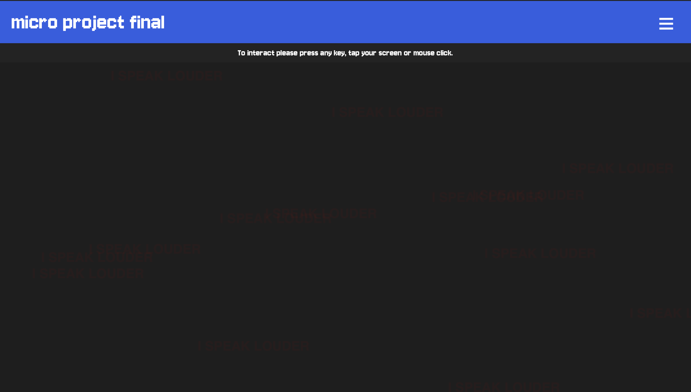
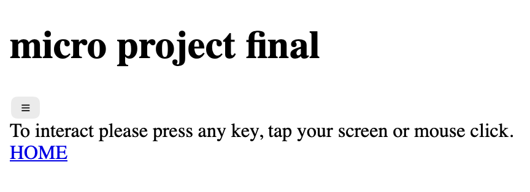
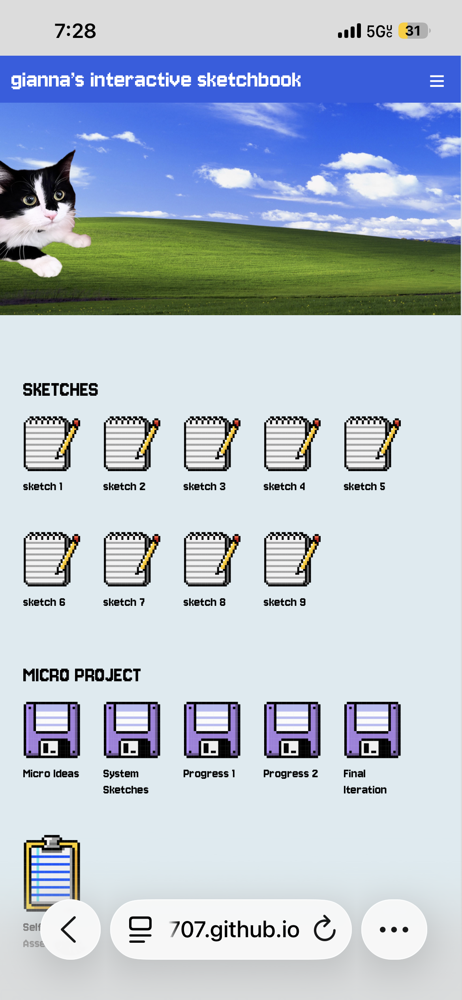
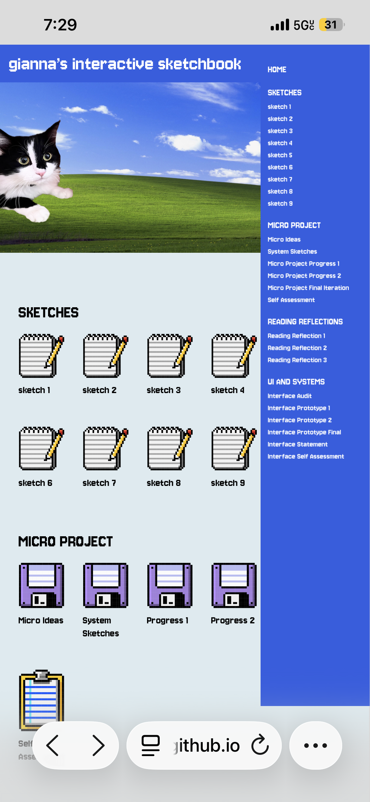
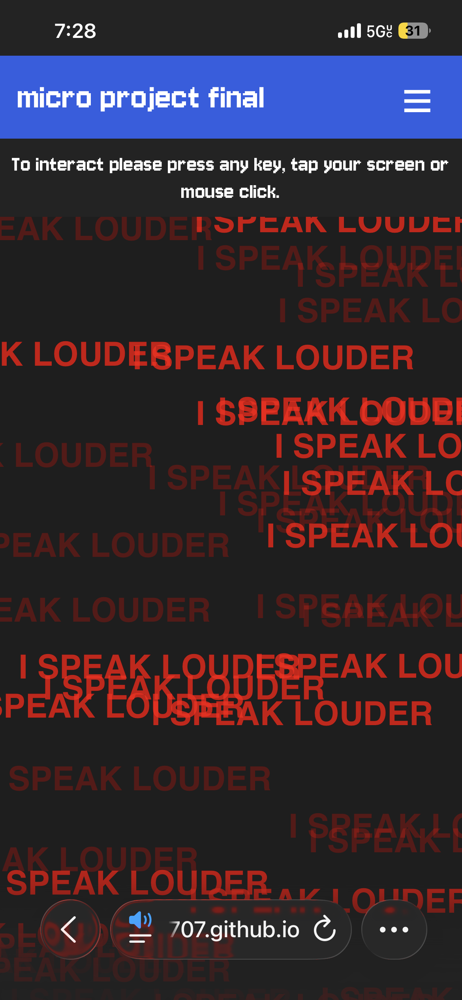

I first started out doing a grayscale Figma UI prototype of my design which was fun to do and also helped me in seeing how to ensure each element of the page works and functions. I had a rough idea of how to translate the design into code like creating a class and id for things like the top bar, menu button, and side menu, but I wasn't sure how to make the menu button work or how to make the side menu appear and disappear. I was able to find a simple JavaScript function that toggles the display of the side menu when the menu button is clicked, which was a great way to implement the interaction I wanted without having to write a lot of complex code from scratch. I had to look it up though and it was a bit tricky but I got a lot of help from W3schools and some tutorials.
It was also easy to organize the home page and set the image of my cat up as the hero image. What broke was the nav menu when you open it doesn't close after and the pop up menu I wanted to implement didn't show up at all. But that's ok since professor Oakley said it might not be needed since the main focus should be on the micro project. I scrapped that from my figma prototype anad just went with putting the instructions as a line that's small enough it doesn't take away from the project's presence but also still visible for those to see so they know what to do. It also doesn't work on mobile so you have to press the back button to get back to the home screen
The surprising part was how much css styling can make a webpage look more polished. When I made the icons hover with CSS it made the interaction feel more dynamic and responsive. I scrapped the code for the hamburger menu on the project page since it was a lot of text and just kept the home so it didn't detract from the project's stage since i never figured out how to make the hamburger menu open and close. The structural assumption the code exposed for me was that I needed to make sure to keep my HTML organized and structured in a way that makes it easy to apply styles and interactions. Because at one point I had the items on the nav show in the project final page but it didn't show everything and cut off that I scrapped it and just kept the home link. If I had more time I'd want to figure out how to make the hamburger menu work on the project page and make it so you can open and close it and make it work on mobile too. I'm proud I was able to make a mobile version of the home page and the project page's screen size responsive. I think the inclusion of the instructions on the project page as a small section of text above the project adheres to hueristics like recognition over recall and visibility of system status since it gives users a clear indication of how to interact with the project without overwhelming them with too much information. Included screenshots of Desktop iterations of before and after Micro Project Final implementation and mobile iteration of home and micro project page:



